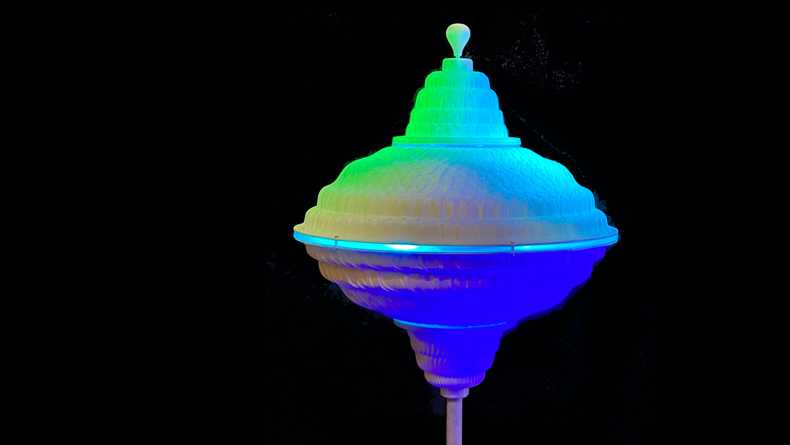
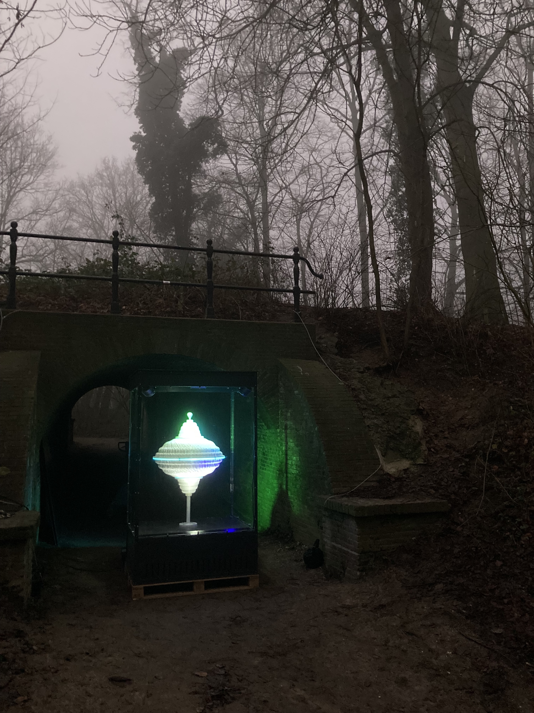
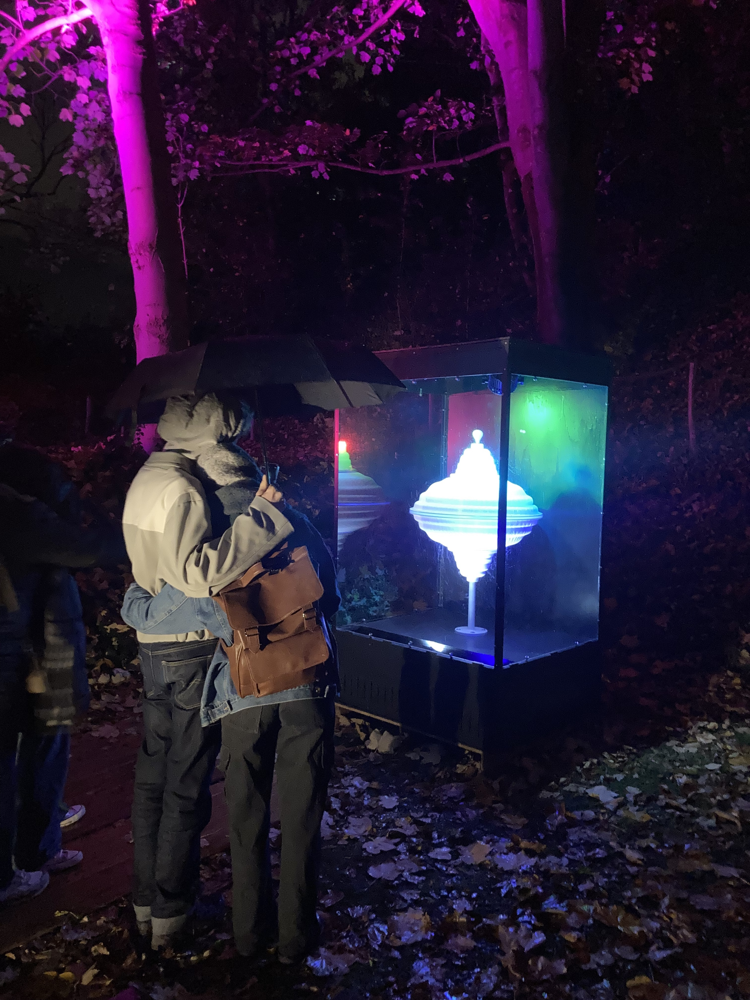
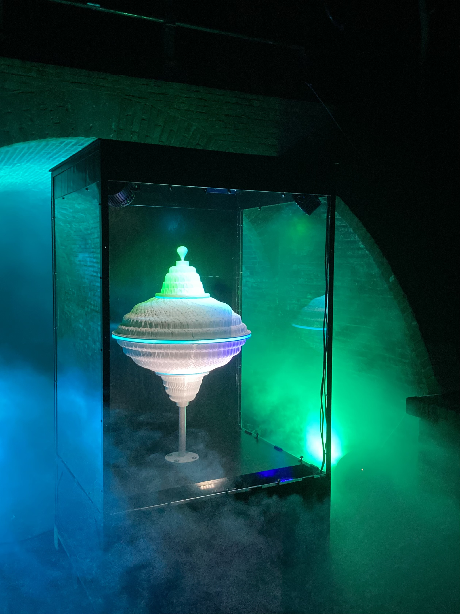

This zoetrope shows how order emerges from chaos in a magical interplay of rhythm, light and patterns from nature. The animation on the humming top is created in your imagination: by turning the top and lighting it with stroboscopes, you see a flowing animation of drops moving over the surface of the humming top. By playing with the speed of the top, the animation arises out of a chaos of movements, and alternating patterns and chaos become visible.
The droplets on this zoetrope are 3D-printed onto the surface of the humming top. The pattern of the drops is based on phyllotactic spirals (the arrangement of leaves on a plant) and the Fibonacci sequence, also known as nature's Golden Ratio. It is the mathematical order behind patterns in nature that allows the animation to arise.
This installation invites you to wonder and imagine how this comes about. It shows how fascinating nature is and how it can be depicted in a playful and seemingly simple way — and how imagination is related to (optical) deception.
Deze zoötroop laat zien hoe orde ontstaat uit chaos in een magisch samenspel van ritme, licht en patronen uit de natuur. De animatie op de bromtol ontstaat in jouw verbeelding door de tol te draaien en te belichten met stroboscopen, zodat je een vloeiende animatie ziet van druppels die over het oppervlak van de bromtol stromen. Door te spelen met de snelheid van de bromtol ontstaat de animatie uit een chaos van bewegingen en worden afwisselend verschillende patronen en chaos zichtbaar.
De druppels op deze zoötroop zijn 3D-geprint op het oppervlak van de bromtol. Het patroon van de druppels is gebaseerd op phyllotaxische spiralen (de rangschikking van bladeren in een plant) en de Fibonacci-reeks, ook wel bekend als de Gulden Snede van de natuur. Het is de wiskundige orde achter patronen in de natuur die ervoor zorgt dat de animatie ontstaat.
Deze installatie nodigt uit om je af te vragen en voor te stellen hoe dit tot stand komt. Het laat zien hoe fascinerend de natuur is en hoe deze op een speelse en ogenschijnlijk eenvoudige manier in beeld kan worden gebracht — en hoe verbeelding verband houdt met gezichtsbedrog.